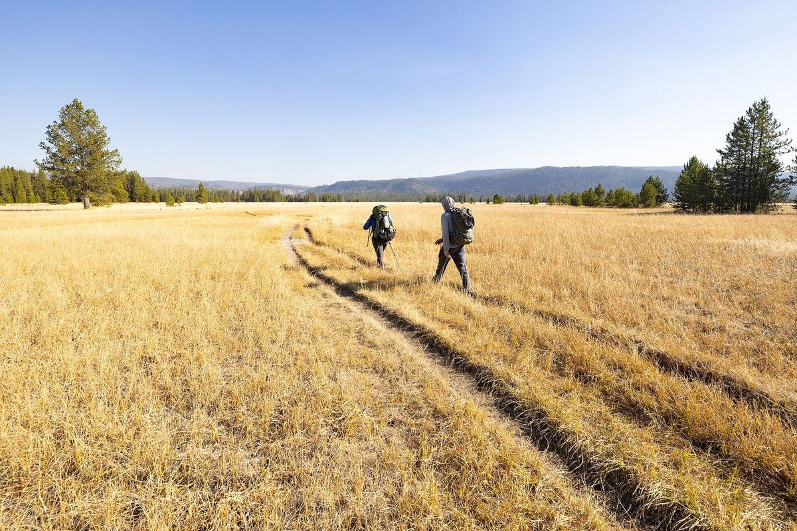

Yellowstone National Park
Through the Bechler meadows
In the quiet southwest corner of the park, the trail runs flat and straight through an ocean of autumn grass.
Fall is the time to come. The mosquitoes are gone, the grass has turned gold, and the mornings are crisp enough that your breath hangs in the air. The path is a thin brown line, sometimes two, cutting across the meadow toward a far row of pines.
Easy miles, big sky
There's almost no climbing, which leaves plenty of energy for looking around. Keep an eye out for elk at the edges of the trees, and give them plenty of room.
Bring water and a snack for the far side, where the river bends and the grass meets the forest. It's a fine spot to sit and do nothing for a while.